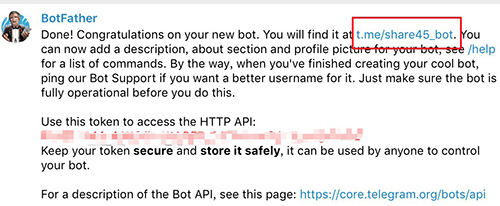
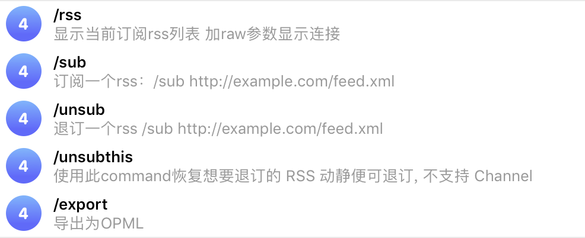

准备工作
注册
- 打开telegram搜索“BotFather”
- 输入消息窗口敲入以下命令
/newbot
显示：Alright, a new bot. How are we going to call it?
Please choose a name for your bot.
这里我们输入任意名称
会提示：Good. Now let's choose a username for your bot. It must end in bot. Like this, for example: TetrisBot or tetris_bot.
- 名称格式要求为：TetrisBot or tetris_bot
输入 share45_bot 可以根据需求命名
如果显示：Sorry, this username is invalid.就需要更改
直到显示：Done! Congratulations on your new bot. You will find it at t.me/share45_bot. You can now add a description, about section and profile picture for your bot, see /help for a list of commands. By the way, when you've finished creating your cool bot, ping our Bot Support if you want a better username for it. Just make sure the bot is fully operational before you do this.
Use this token to access the HTTP API:
xxxxxxxxxxxx 此处为api密钥（重要）
Keep your token secure and store it safely, it can be used by anyone to control your bot.
For a description of the Bot API, see this page:
https://core.telegram.org/bots/api

机器人信息配置
/mybots
- 就会出现我们创建的机器人列表，这里我们直接点击需要编辑的机器人名称即可。
会显示六个选项：
API Token：显示api密钥
Edit Bot：编辑机器人
Bot Settings：机器人设置
Payments：支付
Delete Bot：删除机器人
Back...ots List：返回上一级列表
- 我们主要说一下Edit Bot，点击这个按钮，同样是显示六个按钮：
Edit Name：机器人名称
Edit Description：机器人描述
Edit About：机器人介绍
Edit Botpic：机器人头像
Edit Commands：机器人命令
Back to bot：返回
- 这里我主要讲一下：Edit Commands 点击命令
显示：OK. Send me a list of commands for your bot. Please use this format:
command1 - Description
command2 - Another description
- 这里命令的设置需要结合后期机器人做用来设置，这里我就已后面要讲的rss订阅机器人来设置。
/rss 显示当前rss订阅地址 加raw显示地址链接
/sub 订阅一个rss：/sub 订阅网站地址
/unsub 退订一个rss：/unsub 退订网站地址
/unsubbthis 使用此命令回复想要退订的 RSS 消息即可退订
/export 导出为OPML
最后检查
搜索框搜索我们的机器人名称，进入到频道
就会看到我们之前设置好的相关信息
在消息输入框输入“/”就可以看到我们之前设置好的命令

如果有需要修改的内容，可以到BotFather进行再次设置
至此，我们的电报机器人就创建和配置完毕了。